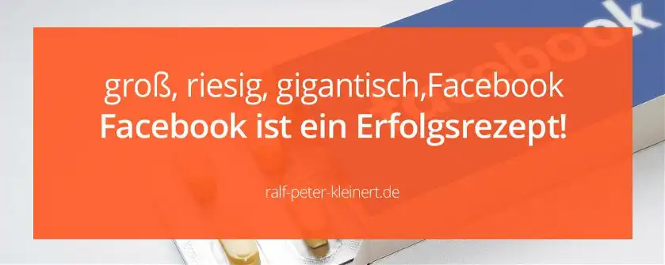

Facebook, das größte Netzwerk solltest du nutzen
Als Facebook 2004 an den Start ging, rechnete niemand mit diesem gewaltigen Erfolg. Und Mark Zuckerberg selbst, wahrscheinlich auch nicht. Im Film The Social Network kann man der Entstehung von Facebook zusehen, aber Mark Zuckerberg wurde mächtig übertrieben dargestellt. Facebook ist heute das größte Social Network der Welt und hat 2,9 Mrd. Nutzer. 2,3 Mrd. Menschen weltweit und 300 Mio. Europäer nutzen es täglich, denn dazu gehören auch Instagram und WhatsApp. Wir Social Media Manager müssen da mitmachen. Momentan (2021) ist Facebook immer noch größtes Network.
Die wichtigsten Kennzahlen und Fakten rund um facebook.com
- 2,9 Mrd. Nutzer monatlich
- 2,3 Mrd. Nutzer täglich
- 294 Mio. Nutzer in Europa
- 140 Mio. Unternehmen auf Facebook
- 4 Mio. Unternehmen auf Instagram
- ca 70 Mrd. $ Umsatz im Jahr +/-
- 400 Mio. aktive Video Watch Nutzer
- 500 Mio. Instagram Story Nutzer täglich
- 7 Mio. werbetreibende
- 1,3 Mrd. Massanger Nutzer
Die Zahlen geben durchaus ein Gefühl, welche Möglichkeiten es hier für dich gibt. Aber es gibt noch weitere Zahlen, die du dir ansehen solltest. Planst du Kampagnen sind die Zahlen einfach wichtig. Du brauchst auf jeden Fall einen Account, weil du sonst nicht auf Facebook arbeiten kannst. Privat posten musst du nicht, aber ohne Konto geht gar nichts.
Wer nutzt eigentlich Facebook?
Menschen jeden Alters und aus allen Gesellschaftsschichten nutzen täglich diese Website, weil es einfach auch Vorteile bringt. Manche schauen nur mal kurz vorbei, wenn etwas Zeit da ist. Wieder andere sind den ganzen Tag online, weil es Spaß macht und kostenlos ist. Die Leute informieren sich über Themen, die sie interessieren, oder sie posten auch Babyfotos. Es gibt Leute, die stellen ihr ganzes Leben online. Sie nutzen die Website wie keine andere und weil das so ist, bietet Facebook enormes Potenzial.
Wie nutze ich die Website von Mark Zuckerberg richtig?
Die Aufgaben die dich erwarten, habe ich ja beschrieben und obwohl ich nicht alle auflisten konnte, bekommst du in dem Artikel wenigstens einen Überblick. Hier habe ich für dich nochmal Informationen zum Social Media Management im Überblick zusammengestellt. Ganz sicher kommst du auch im Marketing zum Einsatz und klar lässt sich Facebook hier für dich auf verschiedene Arten nutzen. Texte, Fotos, Grafiken und Videos sind in diesem Network die Hauptbestandteile von Postings und logisch, kommt es auch stark auf das Thema an.
Die Auswahl der Strategie Bedarf grundsätzlich Analysen und ein ganz besonderer Trend lässt sich bereits beobachten. Videos werden wichtiger, also musst du dich auch damit auseinandersetzen. Videoübertragungen machen 80 % des gesamten Internet Traffics aus, und das sind riesige Datenmengen! Immer mehr Leute konsumieren Videos, natürlich auch, weil es bequem ist. Die meisten gucken Videos aber, weil es Spaß macht. Videos die von Freunden geteilt wurden und die, die Kommentare bekommen sind extrem erfolgreich, weil auch das System solche Filme bevorzugt und entsprechend rankt. Und die Videotechnologie ist so inzwischen ausgereift, dass auch Datenvolumen in den Öffis keine Probleme mehr macht.
Nicht nur Facebook, sondern auch YouTube, Insta oder LinkedIn explodieren förmlich durch den Video Traffic. Videofilme starten einfach überall durch, genau deshalb musst du das unbedingt nutzen und solltest dich auch mal mit der Videoproduktion auseinandersetzen.
Videos werden immer wichtiger
Hier ist ein Beispielvideo und vor allem, weil ich selbst das Videodrehen Liebe, bin ich auch von der aktuellen Entwicklung begeistert.
Das Video zeigt einfach nur, dass Videos unterhaltsam sind. Die Menschen wollen einfach unterhalten werden oder sie suchen nach Informationen. Werbung wollen aber die wenigsten sehen. Etwas angedreht bekommen zum Beispiel, wer will das schon? Und da Videos so wichtig sind, solltest du dich auch um die Videobearbeitung kümmern können.
Klaro, es gibt Ausnahmen, aber Unterhaltung ist der eigentliche Grund für die meisten User. Deine Kunst besteht nun darin dem Zuschauer einen Mehrwert zu liefern, obwohl dein Video wahrscheinlich Marketing ist. Mehrwerte können Unterhaltung oder Informationen sein. Ein Produkt das gebraucht wird, zu einem besseren Preis anzubieten sollte funktionieren. Aber den Preis mit guter Unterhaltung zu erhöhen und das Produkt trotzdem zu verkaufen wäre meisterhaft. Videomarketing richtet sich schwer nach der Zielgruppe und dem Produkt.
Das darfst du niemals vergessen, denn was bei dir funktioniert, muss bei jemand anderem noch lange nicht ziehen. Werbetreibende werden immer einfallsreicher und manchmal auch makaber. Den folgenden Edeka Spot würde ich persönlich einfach als mutig bezeichnen:
Auch dieses kleine Video einer EDEKA Werbung mit Scooter ist wirklich sehr gelungen, muss ich sagen:
Der Vorteil ist doch, dass du den Nutzer in eine andere Welt mitnehmen kannst. Hier kannst du unterhalten oder informieren und mit beidem kannst du Geld verdienen. Win-Win. Auf die angenehmste Art für den Zuschauer kannst du Marketing betreiben und das Produkt schmackhaft machen. Das nicht zu nutzen wäre doch schade, oder? Hier kannst du echte Erfolge erzielen. Videos gehen oft viral, denn sie haben Potenzial wie kein anderes Werbemittel. Das ist natürlich auch auf Facebook so. Deshalb wurde Watch gestartet, weil eben die Videos immer wichtiger werden, brauchte es auf der Website auch technisch sowie optisch eine Abgrenzung.